Adam的三重罗生门
Table of Contents
1 前言:
Adam optimizer 在 deep learning 中普遍可以得到很好的收敛结果，通常也是默认使用的 optimizer (之前的这篇文章仔细分析过 Adam 与其他 optimizer 在不同模型中的效果,
可以参考)。Adam 原始论文1和一般的深度学习库中，Adam的三个参数： β1 、
β2 、 ε 的默认值为 0.9 、 0.999 、 10^-8 。然而，我有几个疑问:
- 这三个数字是不是就那么 神奇, 能让 Adam 弱水三千只取这一瓢饮;
- 如果不是那为什么 Tensorflow/Keras/Pytroch 三大平台都以此作为默认值;
- 如果改变其中某个参数值对收敛效果有什么影响。
[注1]: 本文主要使用 DCGAN 和 WGAN 来尝试各种 β1 、 β2 、 ε 组合;
[注2]: 在Tensorflow官方文档中, 有关于 ε 的简短说明, 之前没有注意, 这里补充
The default value of 1e-8 for epsilon might not be a good default in general. For example, when training an Inception network on ImageNet a current good choice is 1.0 or 0.1
2 Adam 简介
2.1 Adam 算法
| 参数 | 意义 |
|---|---|
| α | learning rate |
| β1 | the exponential decay rate for the 1st moment estimates |
| β2 | the exponential decay rate for the 2nd moment estimates |
| ε | a small value for numerical stability |
| f(θ) | objective function |
2.2 Adam 参数的意义
\(m_t,\beta_1\) :
\(m_t\) 代表的是从第 0 个 time step 累积到第 t 个 time step 的动量，动量使每次更新时能够保留之前更新的方向；
第t个time step的动量是由 \(m_{t-1}\cdot{\beta_1}\) 及 \((1-\beta_1)\cdot{g_t}\) 相加得到，所以 \(\beta_1\) 代表着 你是更相信前次的动量, 还是更相信本次的梯度 。因为保留了之前更新的方向，除了在更新时较稳定，更可以使参数卡在局部最小值时仍可以脱离出来。
举例来说，当梯度 \(g=0\) 时，一般的SGD并不会更新参数 \(\theta\) ；而在Adam中，当 \(g=0\) 时, \(m_t=m_{ t-1 }\) , 亦即 \(m_t\neq0\) ，\(\theta\) 还是会更新，并有机会逃离局部最小值。
\(v_t,\beta_2\) :
在Adam中，\(v_t\) 、 \(\beta_2\) 在演算法中的意义与 RMSProp 相同。\(v_t\) 的目的是随梯度g去调整 learning rate 的大小；\(\beta_2\) 则保留前一个时刻 learning rate 的比例。由于训练前期及后期的梯度值相差甚大，借由 \(v_t\) 和 \(\beta_2\) 调整 learning rate 即可得到更好的收敛效果。
2.3 相关资料搜集
- MNIST：Adam 的原始论文中提及，他们采用的默认参数可以在这个资料集得到最佳结果， 不过我仍会对这个十分经典的 toy example 中做验证。
- Cifar-10：由于在Tensorflow的官方文档 在ImageNet表现最好的时候是ε = 1或0.1，我想在比较简单的图形辨识 Cifar-10 尝试 Google Net的最佳参数能否也得到最好的结果。
- Kaggle，美国房价dataset：不同于前两个图形分类问题，我测试在 regression 的 task 中，Adam 的默认参数的收敛效果。
- Conditional DCGAN：在 DCGAN 的众多网上源码中2, 3，我发现大部分Adam中的β1设为 0.5， 我想比较与默认值β1 = 0.9的差异。
Wasserstein GAN：WGAN 的原始论文中4提及，若是使用Adam 作为optimizer，结果会很差、不稳定，因此我重新验证使用Adam Optimizer 以及 RMSprop 的结果差异。
Finally, as a negative result, we report that WGAN training becomes unstable at times when one uses a momentum based optimizer such as Adam (with β1 > 0) on the critic, or when one uses high learning rates. …… We therefore switched to RMSProp which is known to perform well even on very nonstationary problems.
3 鞍点的讨论
Ian Goodfellow 曾经在2015 的 Montreal Summer school5 提到：neural networks 的loss function 中有许多鞍点，鞍点的影响大过局部最小值，因此可以先观察不同参数的 Adam 在鞍点上收敛轨迹的特性，可以把得到的结果应用在之后的测试中。 先设计一个简单的对称鞍点，假设 model 中只有两个参数：w1, w2，定义loss function 的方程式为(平移至鞍点中心点为(1, 1) 是为了方便观察)：
\(loss(w1，w2)=(w1-1)^2-(w2-1)^2\)
每一次参数的起始点都固定为(w1, w2) = (-3, 0.8)，此时loss = 15.96
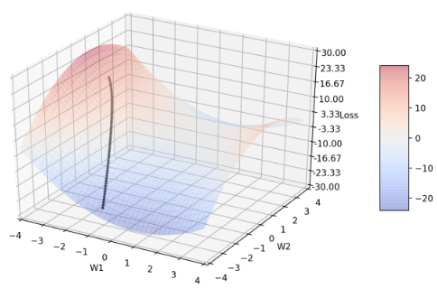
Figure 1: 鞍点图及 Adam 收敛轨迹
以下的图中，所有的黑线轨迹都代表Adam 默认参数的收敛轨迹；所有参数的收敛过程都经过600 个epochs，每10个 epochs 输出一次w1、w2 的坐标和对应的loss 值，因此每张图的轨迹都有 60 个点；并且，每一条轨迹的learning rate 都固定为0.005。
3.1 变数：β1
注：β1 默认值= 0.9
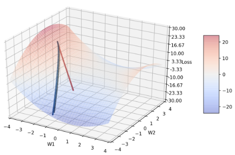
Figure 2: 图2 显示 β1 分别= 0.9(黑)、0.1(蓝)、0.5(绿)、0.999(红)的收敛轨迹
可以发现除了红线以外，其他三者的轨迹都非常接近，(纵使三者的参数差距颇大)，尤其蓝、绿色的收敛轨迹几乎贴合在一起，因此，图3 聚焦在三者后期的轨迹，以利观察。
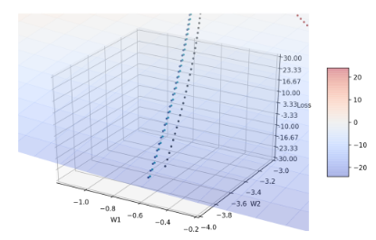
Figure 3: 放大 β1 后期的收敛轨迹
当β1 = 0.999时(较默认值大)，收敛轨迹比较难转向，因此收敛情况是这四者之中最糟糕的。推测可能是因为动量较大，导致曲面斜率方向改变时，来不及即时转向；亦即m t 几乎来自于m t-1，较少参考当前的梯度g，由于前期的梯度g较大，所以要是到training后期还保留这么大的梯度，很容易爆掉。至少，从这张图知道，一般的deep learning library会选择β1默认值为0.9而不是像β2的默认值为0.999。
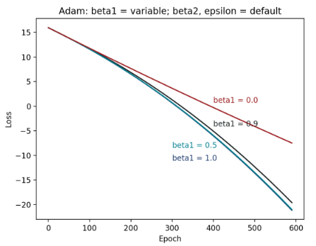
Figure 4: 不同 β1 的 epoch-loss 图
并且，可发现当β1 = 0.1 ~ 0.9，其实收敛方式差异不大，尤其在β1 = 0.1和0.5几乎没有差别。不过，值得注意的是，β1 = 0.1和0.5还是比默认值的收敛情况好一些。
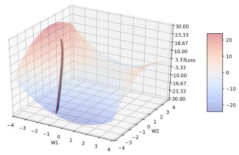
Figure 5: 不同 β1 分别= 0.9(黑)、1.0(蓝)、0.5(绿)、0.0(红)的收敛轨迹
可以发现图中根本没有蓝线轨迹，因为蓝线在第一次迭代时就变成nan 了，原因在于Adam 演算法中若β1 = 1 时会导致分母等于零。而其他三条轨迹的收敛情况都很相近，包含β1 = 0 时的情况，这代表梯度g 跟动量的方向在对称鞍点的情形下几乎一样。
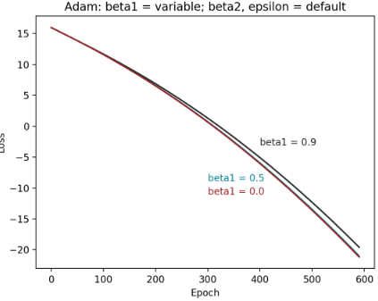
Figure 6: 不同β1 在极端值的epoch – loss 图
3.2 变数：β2
注：β2 默认值= 0.999
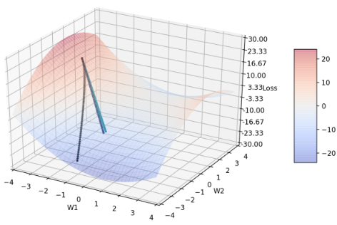
Figure 7: β2 分别= 0.999(黑)、0.9(蓝)、0.0(绿)、1.0(红)的收敛轨迹
选择这几点的原因在于，当β2 介在0.0 ~ 0.9 之间时，收敛轨迹都很相近(可由此图看出)，因此在这个区间只比较这两个端点(0.0 和0.9)，并再多比较比默认值大的另一个极端值： 1.0。可发现，蓝、绿线轨迹几乎不太会随loss function 的变化转弯。当 β2 = 0，物理意义上代表的是不会去记忆之前的learning rate ，所以也不会随着梯度g 减小而减小 learning rate。所以可以知道，β2 至少不能太小，我从后段表7 也有观察到当 β2 很小的时候，结果会变得非常差。
红线的讨论在图8。
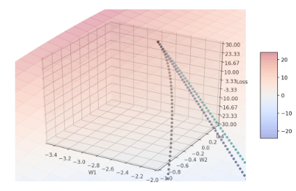
Figure 8: 放大起点位置
从图7中看起来红线轨迹消失了，然而放大收敛过程的起点位置(如图8)，可以发现起点有红点，近一步检查w1、w2的座标可发现，在β2 = 1时，w1和w2的座标完全没有改变，仍维持在(-3.0, 0.8)。原因在于，当β2 = 1时会使算法中 \(\hat{V_t}\) 这一项在分子分母都为零，并考虑参数的变化= \(\dfrac{text{const}}{\hat{v_{t}}+\epsilon}\) 为零(才符合此次实验结果)，表示Tensorflow很可能把分子分母都为零的 \(\hat{V_t}\) 定义成无限大了。
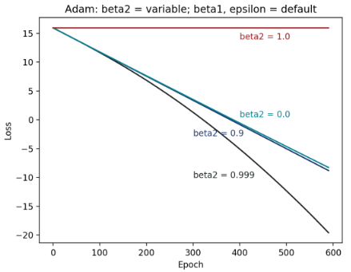
Figure 9: 不同 β2 的 epoch–loss 图
图9 可看出在对称鞍点的情况下，默认值β2 = 0.999 有最好的收敛情形，比0.999 小的 0.0 到0.9 都有差不多的收敛效果(实际上，若将β2 慢慢从0.999调整到0.9，loss 曲线大致就是有规则的从图中黑线过渡到蓝线)，而比默认值大、大到极端值的β2 = 1.0 ，则完全没有收敛效果。
4 变数：ε
注：ε默认值= 10 -8
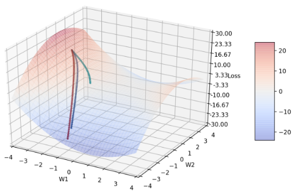
Figure 10: ε 分别 = 10 -8(黑)、0.1(蓝)、1.0(绿)、0.0(红)的收敛轨迹
可发现图10也少了黑线轨迹，近一步的讨论留待图11。而红线轨迹ε = 0是收敛过程最佳的，随着ε增大，转弯开始变慢，收敛速度变慢。 和β1、β2相比，调整β1、β2至特定值时，会出现几乎完全不转弯、轨迹是直线的情形，但调整ε = 1时只是延后转弯时机，然而，由于算法中learning rate的分母有 \(\sqrt{\hat{V_t}}+\epsilon\) ，导致ε过大时收敛幅度变小，也因此我没有进一步再比较当ε更大的情况。
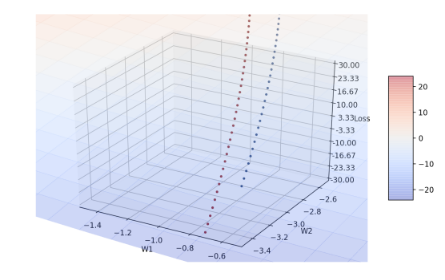
Figure 11: 放大 ε 后期的收敛轨迹
输出四者的w1、w2座标后可发现黑线轨迹完全跟红线轨迹重合(由于程式先画出黑色点，因此会把红色点画在黑色点之上)，这由于 \(\epsilon=10^{-8}\) 已经几乎趋近于零，可能在这次的迭代过程中， \(\sqrt{V_t}\) 都不曾等于零，因此ε = 0不会造成 \(\alpha\cdot\hat{m_t}/(\sqrt{\hat{v_t}}+\epsilon)\) 的分母= 0，造成收敛失败。并且 Tensorflow可能也自动忽略了小数点位数太后面的项，因此看不出两者实际应该要有的些微差异(毕竟，“理论上”很小的数，和零仍是不一样的)。
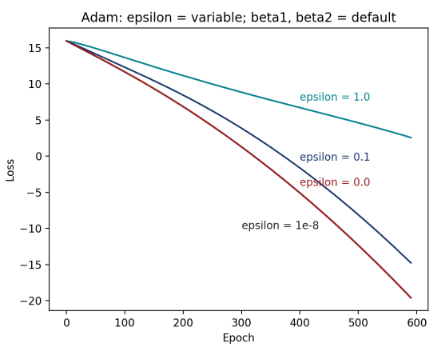
Figure 12: 不同 ε 的epoch – loss 图
黑线同样隐藏在红线之后，由此图可看出，默认值ε = 10 -8 的收敛效果最佳，其次，随着ε增大，收敛效果会越来越不好。值得注意的是，可发现ε从10 -8到0.1的差异，明显小于从0.1过渡到1.0的差异。这点和我先前的实验结果很符合，当ε很小的时候(< 0.1)，调整它时，收敛过程不太会有显著的改变。
5 数据集和模型
5.1 MNIST
5.1.1 Dataset
| 数据集 | 样本类型 | 训练集 | 验证集 |
|---|---|---|---|
| MNIST | 灰度图(28*28) | 60000 | 6000 |
5.1.2 NN 架构
| 层 | 形状 |
|---|---|
| input_shape | (28,28,1) |
| cnn_filter | (3,3,30) |
| cnn_filter | (3,3,60) |
| max_pooling | (2,2) |
| flatten | |
| fcn_relu | 600 |
| keep_prob | 0.5 |
| fcn_softmax | 10 |
5.1.3 model parameter
| 参数 | 值 |
|---|---|
| learning_rate | 0.001 (no decay) |
| loss fn | categorical cross entropy |
| epoch | 30 |
5.2 Cifar-10
5.2.1 Dataset
| 数据集 | 样本类型 | 训练集 | 验证集 |
|---|---|---|---|
| Cifar-10 | RGB彩图(32*32*3) | 50000 | 10000 |
5.2.2 NN 架构
| 层 | 形状 |
|---|---|
| input_shape | (32,32,3) |
| cnn_filter | (3,3,32) |
| cnn_filter | (3,3,32) |
| max_pooling | (2,2) |
| keep_prob | 0.25 |
| cnn_filter | (3,3,64) |
| cnn_filter | (3,3,64) |
| max_pooling | (2,2) |
| keep_prob | 0.25 |
| flatten | |
| fcn_relu | 512 |
| fcn_softmax | 10 |
5.2.3 model parameter
| 参数 | 值 |
|---|---|
| learning_rate | 1e-4 (decay) |
| loss fn | mse |
| epoch | 200 |
| batch_size | 256 |
5.3 回归
5.3.1 Dataset
| 数据集 | 样本类型 | 训练集 | 验证集 |
|---|---|---|---|
| house sales in king county, USA | csv | 18000 | 3600 |
5.3.2 型号架构
| 层 | 形状 |
|---|---|
| input_shape | 71 |
| fcn_relu | 1000 |
| fcn_relu | 1000 |
| fcn_relu | 1000 |
| fcn_relu | 1 |
| keep_prob | 1 |
5.3.3 model parameter
| 参数 | 值 |
|---|---|
| learning_rate | 1e-4 (no decay) |
| loss fn | mse |
| epoch | 40 |
| batch_size | 100 |
5.4 DCGAN
5.4.1 Dataset
| 数据集 | 样本类型 | 训练集 | 验证集 |
|---|---|---|---|
| Cartoon image Cifar-10 | RGB彩图 | 18000 | 3600 |
5.4.2 Model架构
Generator of conditional-DCGAN
| 输入feature (256+100维) |
| → 通过fc [input = 356, output = (64 × 4 × 4 × 8)] |
| → reshape成[4, 4, 128] |
| → batch normalization(所有batch normalization的epsilon = 1e-5, momentum = 0.9) |
| → relu activation |
| → 通过4层deconv layer (kernel size = 5 × 5, stride = 2, filters依序为[256, 128, 64, 3]) |
| → 每通过一层deconv都经过batch normalization和relu再传到下一层 |
Discriminator of conditional-DCGAN
| 两个feature： |
| image 维度= (64, 64, 3)，分成三类：real(符合文字叙述的图)、wrong(不符合文字叙述的图)、fake(G 对应文字产生的图)。 |
| text 维度= 256。 |
| 图片经过4层convolution layer(kernel size = 5 × 5, stride = 2, filters各自为[64, 128,256, 512] ) |
| →每一层都经过leaky relu (max(x, 0.2 x)) |
| →后三层的convolution layer通过leaky relu前都会经过batch normalization (这部分的参数设定与generator中相同) |
5.4.3 model parameter
| 参数 | 值 |
|---|---|
| learning_rate | 2e-4(decay) |
| loss fn | mse |
| epoch | 200 |
| batch_size | 64 |
5.5 Wasserstein GAN
在WGAN 原始论文中提到：因为WGAN 的训练过程较不稳定，不太适合使用就有动量的优化器，可能会导致loss 增加或是产生的sample 变差，因此可用 RMSProp 取代Adam，而此次我也会针对这一点进行验证。
5.5.1 Dataset
同 DCGAN
5.5.2 Model架构
更改DCGAN的以下部分：
- 去掉discriminator 输出的sigmoid。
- 去掉 loss function 中的 log。
- 在discriminator 加上weight-clipping，设定为0.01。
5.5.3 model parameter
| 参数 | 值 |
|---|---|
| learning_rate | 1e-4(decay) |
| loss fn | mse |
| epoch | 15 |
| batch_size | 64 |
| weight-cliping | 0.01 |
6 贡献和创新性
7 结论
| MNIST | 如同Adam 论文中的叙述，Adam 默认的参数是这个资料集上最好的优化器设定，然而，当 β1、β2 调小一点时，结果不会差很多。 |
| Cifar-10 | Adam 中的 β2 = 0.9。 |
| regre | Adam 中的 β1、β2 调小一点(如0.5 和0.9)，可使error 下降一些。 |
| DCGAN | 使用Adam 时，要把β1 设定的小一点，才能较快随着discriminator 改变的方向转向。 |
| WGAN | 使用Adam，动量会造成收敛方向无法即时随着discriminator 改变的方向即时，因此结果会变差，并且变差的情况比DCGAN 严重许多。 |
8 可以改进的地方
可尝试使用更好的降维方法。我在参数对loss 的作图中，使用的降维方法为PCA，PCA 的降维过程中会损失一些空间分布的特性。所以我认为可以试试看其他降维的方法，例如： t-SNE，t-SNE可以保留一些空间的特性，也许可从图中得到更多资讯。从我做出的实验结果去找最佳Adam 参数的规则，设定一套流程来判断Adam 最佳的参数。原本我推测Adam 最佳参数与task 的性质(ex: Image classification)有关，然而Google Net 最佳的参数如果套用到Cifar-10 的model，performance 会变得非常差，所以，从我的实验结果来看，参数的选择应该和task 的性质没有绝对的相关性。后来我想到model 参数量的多寡会影响到整个 loss function 的分布，因为直觉上简单的model 应该鞍点或是局部最小值的数量应该会远小于复杂的model 中鞍点跟局部最小值的数量，所以未来可以尝试看看model 参数量与Adam 最佳参数的关系。除了不同参数在鞍点的表现，也可以尝试看看不同参数在local minimum 的表现。